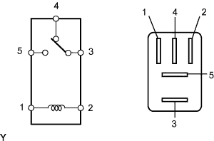

РЕЛЕ (для моделей с обогревателями стекол) > ПРОВЕРКА БЕЗ СНЯТИЯ С АВТОМОБИЛЯ |
| 1. СНИМИТЕ РЕЛЕ ОБОГРЕВАТЕЛЯ СТЕКЛА (DEFOG) |
|  |
Снимите реле обогревателя с главного ЭБУ кузова (распределительного блока панели приборов).
| 2. ПРОВЕРЬТЕ РЕЛЕ ОБОГРЕВАТЕЛЯ ЗАДНЕГО СТЕКЛА |
Измерьте сопротивление в соответствии со значениями, приведенными в таблице ниже.
| Контакты для подключения диагностического прибора | Условие | Заданные условия |
| 3 - 4 | Напряжение аккумуляторной батареи не подается на контакты 1 и 2 | Менее 1 Ом |
| Напряжение аккумуляторной батареи подается на контакты 1 и 2 | 10 кОм или более | |
| 3 - 5 | Напряжение аккумуляторной батареи не подается на контакты 1 и 2 | 10 кОм или более |
| Напряжение аккумуляторной батареи подается на контакты 1 и 2 | Менее 1 Ом |
| 3. УСТАНОВИТЕ РЕЛЕ ОБОГРЕВАТЕЛЯ СТЕКЛА |
Установите реле обогревателя на главный ЭБУ кузова (распределительный блок панели приборов).